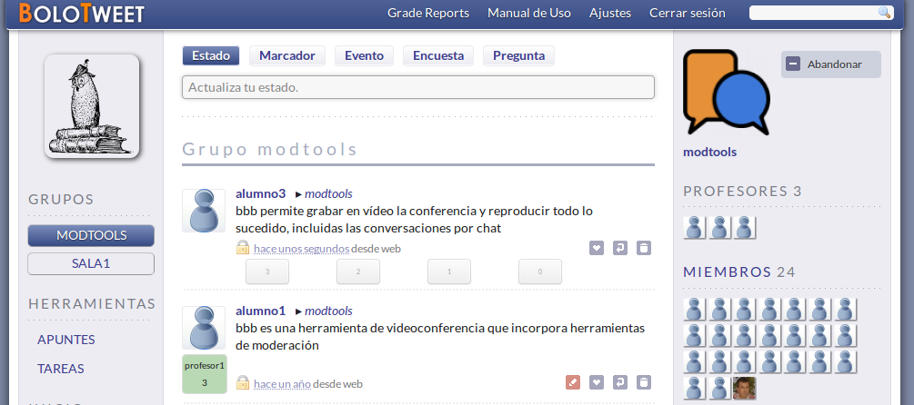
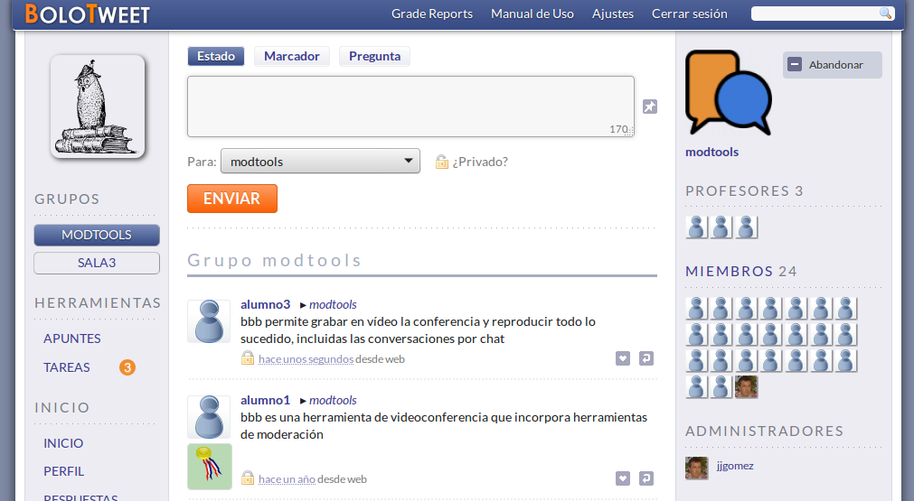

+34 913 94 76 44
+34 913 94 76 44
 jjgomez@ucm.es
+34 913 94 76 44
jjgomez@ucm.es
jjgomez@ucm.es
+34 913 94 76 44
jjgomez@ucm.es
Bolotweet es una aplicación para apoyo a la docencia que usa micro-anotaciones o micro-blogging. Micro-blogging es una actividad popular hoy en día gracias a productos comerciales como Twitter. Sin embargo, micro-blogging es más que un producto de una compañía. Existe software libre que implementan los mismos principios y que tienen la ventaja de no perder el control de los datos que se suben a la nube.
El sistema de micro-anotaciones en el que se basa Bolotweet ha sido modificado con respecto al estándar que impera en redes sociales. Para empezar, las anotaciones están limitadas a 170 caracteres y no 140. La otra diferencia principal es que en Bolotweet se puede puntuar de 0 a 3 cualquier anotación que haga un estudiante. Es el profesor el que coordina qué anotaciones hay que hacer en cada momento y tiene libertad para, basándose en otras herramientas como el uso de etiquetas o hashtags, organizar el esfuerzo desarrollado en la plataforma.
El método docente que promueve Bolotweet es sencillo: de los 50' de clase, dedicar los últimos 10' a que los estudiantes anoten alguna idea de lo que haya impartido el profesor en los 40' anteriores. No tiene por qué ser una explicación detallada de todo lo dicho por el profesor. Tampoco hay que plantear que en los 170 caracteres se dé una larga explicación. El ejercicio consiste en resumir, sintetizar y redactar. Ello obliga al estudiante a reflexionar sobre lo impartido y a trabajar en la mejor forma de expresarlo.
El esfuerzo del profesor se centra en revisar las anotaciones y en decidir qué valor se le aplica. Tiene la posibilidad de contestar a la anotación haciendo precisiones o ayudando a señalar los errores. El profesor puede editar las evaluaciones y también se puede colaborar entre varios profesores para evaluar a los estudiantes. La revisión de anotaciones no consume mucho tiempo. A modo indicativo, revisar 30 anotaciones, dedicando tiempo a contestar y matizar, suele llevar 15 minutos de esfuerzo. Si sólo se limita a evaluar, puede lograrse tiempos menores.
Los estudiantes ven la valoración del profesor que ha dado a su anotación, pero no la de otros. La única salvedad son casos donde el profesor ha otorgado la máxima nota. Estas anotaciones son destacadas para todos los alumnos con una medalla, indicando que puede ser tomada como ejemplo del tipo de anotación que hay que hacer. Estas anotaciones excelentes pueden ser recopiladas más tarde en apuntes a disposición de todos los estudiantes.
Estas estadísticas se actualizan una vez cada hora. Sirven para informar del progreso de Bolotweet y hacer visible trabajo de los profesores y de los estudiantes.
Si quieres saber más sobre Bolotweet, puedes consultar este material
Facultad de Informática.
 Calle del Prof. José G! Santesmases, 9 C.P. 28040, Madrid
Calle del Prof. José G! Santesmases, 9 C.P. 28040, Madrid
 913 94 76 44 (preguntar por Jorge J. Gómez Sanz)
913 94 76 44 (preguntar por Jorge J. Gómez Sanz)
jjgomez@ucm.es